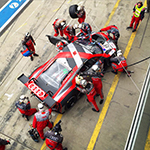
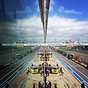
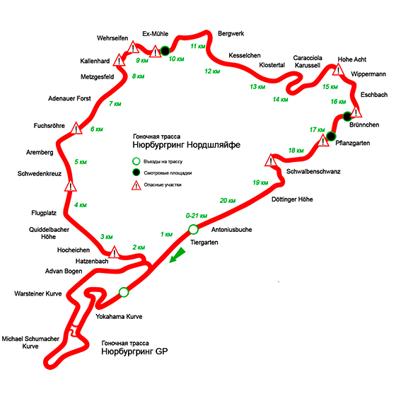

Нюрбургринг — лучшая гоночная трасса в мире
Ринг — настоящая Мекка для любителей автомобилей со всех уголков Земли. Сюда на уик-энды съезжаются не только немцы, голландцы, британцы, но и продвинутые автомобильные энтузиасты из самых далеких стран. Наконец-то, Нюрбургринг стал известен в России и в других странах СНГ. Полученная Вами здесь информация станет надежным и полезным проводником, как по самой гоночной трассе, так и по ее живописным окрестностям с многочисленными прокатными компаниями, тюнинговыми ателье, автомобильными сервисами, гостиницами и ресторанами.
Нюрбургринг Нордшляйфе и факты
Трасса Нордшляйфе была спроектирована и построена с 1925 до 1927 года. Открытие состоялось 18-19 июня 1927 года. Стоимость реализации объекта под ключ составила примерно 8 100 000 Немецких Марок ( в пересчёте на 2020 год это около 30 000 000 Евро ). Протяжённость трассы составляет 20,8 километров. Заезды и массовые мероприятия проходят на трассе с марта до ноября. В зимнее время в связи с погодными условиями Нюрбургринг закрыт для заездов. Количество левых поворотов — 33, правых — 40. Перепад высоты составляет порядка 300 метров. Самое высокое место — участок Höhe Acht, 616,80 метров над уровнем моря. Самое низкое место — участок Breidscheid, 320 метров над уровнем моря. Максимальный подъём на трассе составляет 17%. Максимальный спуск — 11%. Стоимость проезда одного круга ( 20,8 км ) на автомобиле или мотоцикле с Понедельника до Четверга составляет 25 евро и 30 евро с Пятницы до Воскресенья. Стоимость проживания в регионе вокруг гоночной трассы — от 50 евро в сутки ( с завтраком ). Стоимость эвакуации автомобиля с гоночной трассы стартует от 150 евро. Ближайшие крупные аэропорты: Франкфурт на Майне, Франкфурт-Хан, Кёльн-Бонн и Дюссельдорф. Абсолютный рекорд полного круга Нордшляйфе с временем 5:19,546 минут был установлен 29 июня 2018 года на прототипе Porsche 919 Hybrid EVO тестовым пилотом и гонщиком Тимо Бернхардом.
Трасса Нюрбургринг GP для проведения Формулы 1 была сдана в эксплуатацию в 1984 году. Протяженность трассы составляет 5,148 км. Количество поворотов — 15. Рекорд трассы принадлежит Михаэлю Шумахеру, который в 2004 году на Формульном болиде проехал полный круг GP за 1:29,468 мин.
Нюрбургринг подкупает своим уникальным сочетанием величия и демократичности. В самом деле, немцы каким-то чудом удержались от имперских амбиций и сделали пребывание на Ринге доступным и приятным для каждого — от британского студента с горящими глазами и 20-летним VW Golf III до старенького американского миллионера, владеющего дюжиной коллекционных Porsche 911. Места здесь хватит для всех.
Всё очень просто. На Нюрбургринг можно приехать на собственном автомобиле и всего лишь купив карту на пару кругов, совершить самую захватывающую поездку. Если нет своего автомобиля? Обращайтесь в компании, которые сдают автомобили в аренду специально для гоночной трассы. Нюрбургринг предоставит вам полностью весь комплекс услуг. Так же есть несколько немецких компаний для аренды спорткаров, например Rent Car Nürburgring. Большинство компаний имеют собственный ангар, штат опытных инструкторов и спорткары для участия в гоночных сериях.
Все хотят на Нюрбургринг
Сейчас в большинстве автомобильных концернов всё больше проводят тестирование прототипов своих будущих моделей именно на Nordschleife. Считается, что именно классическая Северная петля Нюрбургринга состоит из такого невероятного набора поворотов и прямиков, который буквально с первого же круга обнажает достоинства и недостатки всех ключевых узлов автомобиля.
 
Прежде, свои предсерийные образцы обкатывали на Ринге преимущественно немецкие производители, отдавая при этом предпочтение своим топовым спорткарам. Но теперь, буквально поселились на Ринге опытнейшие механики и инженеры американских, японских и английских компаний. Чувствуется, что они пришли на Ринг всерьез и надолго, сняв или построив с нуля просторные ангары в Кремниевой долине Нюрбургринга. Сейчас обстановка внутри них оказывается чем-то средним между боксами богатой гоночной команды и всемогущим инжиниринговым комплексом с мощнейшей исследовательской лабораторией.
Лучшее время круга и маркетинг
Втянулись в поклонение Рингу и PR-отделы автомобильных концернов. Вначале они просто гордо отмечали, что новая модель была подвергнута жестоким испытаниям на Nordschleife. Но теперь все чаще они указывают и время круга, которое заводской тест-пилот показал на трассе, а заодно награждают новинку каким-то звучным, пусть и неофициальным титулом. Например, более года Cadillac CTS-V оставался самым быстрым полностью серийным седаном на Ринге — до появления Porsche Panamera Turbo S. Однажды на этом сайте мы расскажем, какие хитрости используют заводские инженеры, помогая своему тест-пилоту добиться лучшего времени круга за рулем новинки. Ведь даже правильный подбор резиновой смеси вроде бы вполне обычной на вид шины позволяет выиграть до нескольких секунд. Что уж говорить о более агрессивных компонентах тормозных механизмов и даже о легком увеличении давления наддува...
Достаточно объективным источником информации о поведении спорткара на Nordschleife является немецкий журнал Sport Auto. Его главный редактор Horst von Saurma, обладая огромным накатом на Ринге, старается проводить испытания автомобилей в практически одинаковых условиях — с честными заводскими настройками и компонентами. Именно время круга «фон Шаурмы» показательно при академическом сравнении характеристик спорткаров.
